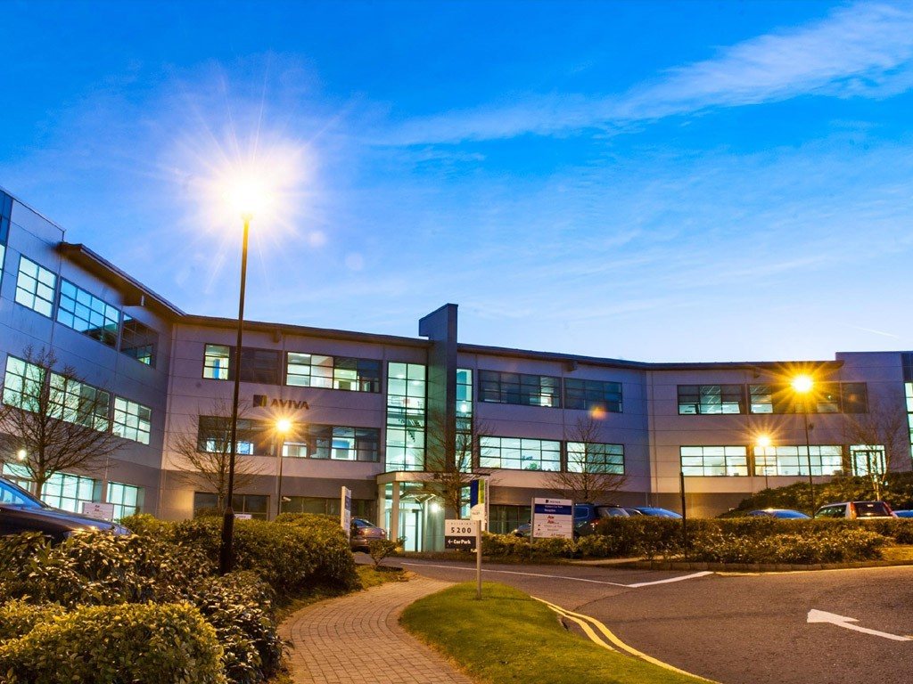
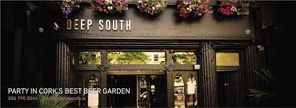
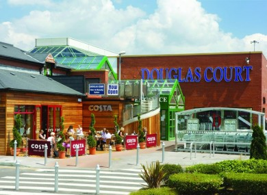
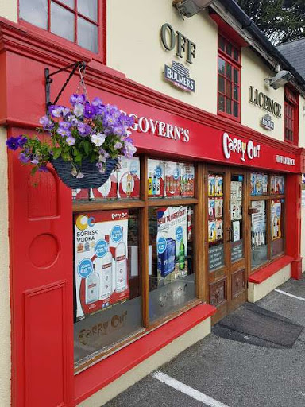

Part-Time Work Experience

IBM: 5300 Avenue 5000, Rathmacullig West, Cork Airport Business Park, Co. Cork, T12 VH31
I spent one week as part of Transition Year placement in IBM learning the ins and outs of the business. From observing scrum meetings, learning how software developers operate, how sales operatives work, etc. I gained valuable insights into information technology also whilst on site. I was shown their main CPU and operating systems which have proved valuable to date.

Deep South: 51 Grand Parade, Centre, Cork, T12 H677
While in Transition Year I decided to apply for a real part-time job as I now had much more free time outside of school hours and had a couple of school trips comig up which I wanted to pay for, essentially easing the load and contributing at home. It was also my first experience of real working conditions in which I learned the importance of punctuality, respoonsibility and integrity within the work place. I was a glass collector at first,then became trained behind the bar whilst performing the typical housekeeping duties of a busy bar in the city. I made some great friends and it was essentially a learning curve as well as an excellent oppurtunity for a sixteen year old.

Dunnes Stores: Douglas Court Shopping Centre, Cork, T12 E86C
After the pressures of the leaving cert I applied for a summer job with Dunnes Stores. I was located in Douglas Court Shopping Centre which would have been on the opposite side of the city. I was a floor member of the Drapery Department and my main duites were to serve customers, opertaing till machines, maintaing the floor and stocking aisles/shelves. It was an extremely professional environnement with hard-working staff who were there to offer a helping hand. I thoroughly enjoyed my time at Dunnes but due to inconvenience I was unable to continue to work in Douglas.

Carry Out Off-License: Ballyhooly Rd, Ballyvolane, Cork
I am currently working in Carry Out Off-license and hope to do so for the foreseeable future. It is no longer than a five minute commute from my home and the hours are desirable for a college student. At the moment it is the perfect part-time job that coencides with my studies and sporting engagements. The basic shopkeeping duties apply for this current line of work. Stocking, stock-taking, merchandising, customer-service, use of the till machines and maintaining the shop floor in general.